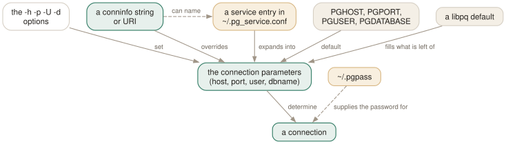

Day 02
Getting connected
Four parameters, five places they can come from, and one file that stops you typing passwords.
By the end of today you can
- connect with a conninfo string or a URI instead of four separate flags
- stop typing passwords, using ~/.pgpass and a named service entry
- predict what \c will keep and what it will silently drop
Something to connect to
If you already have a database you are willing to break, skip this section. If you have only the client — which is what a distribution's postgresql package often installs — then one command gives you a whole server to practise on, and it is worth having before Day 1's drills rather than after.
$ docker run --rm --name pgcourse \
-p 5432:5432 \
-e POSTGRES_PASSWORD=postgres \
-e PGDATA=/var/lib/postgresql/data/pgdata \
--tmpfs /var/lib/postgresql/data/pgdata \
postgres:18.6-alpine \
-c log_statement=all -c log_duration=on
Every part of that is doing something, and two of the parts are the reason to prefer it to a real installation:
--tmpfswithPGDATA- the data directory is a RAM disk, so the entire database disappears when the container stops. That is the point rather than a limitation: you are about to be told to break things on purpose, and “start it again” is the whole recovery procedure.
- no
-d - it runs in the foreground, so this terminal becomes the server's log. Run psql in a second one. C-c stops the server, and
--rmmeans it leaves nothing behind. -c log_statement=all- log every statement the server receives, and with
log_duration=onhow long each took. This turns the first terminal into a live view of what psql actually sends — which is worth more on this course than it would be on a real server, and is revisited on Day 17. -p 5432:5432- the default port, so psql needs no
-p. If you do already have something on 5432, use-p 55432:5432and add-p 55432to every psql command from here on.
Then, in the second terminal:
$ export PGPASSWORD=postgres
$ psql -h localhost -U postgres
psql (18.6)
Type "help" for help.
postgres=#
Note the -h localhost, and try leaving it out — you will get “connection to server on socket "/var/run/postgresql/.s.PGSQL.5432" failed”. The container speaks TCP and has no socket on your filesystem, which is the next section's first point arriving early.
Four parameters, and nothing else
A connection needs a host, a port, a user and a database. Everything the manual page says about connecting is about where those four values come from — and it offers five places, which is why people who have used psql for years still occasionally end up in the wrong database.
The defaults are more generous than people expect. Omit the host and you get a Unix-domain socket on the local machine. Omit the port and you get whatever the server was compiled with, normally 5432. Omit the user and you get your operating-system user name — and then, because a database name is also needed, that same name is used as the database. Which is why psql on a fresh machine so often says “database "jhrcek" does not exist”: nothing is broken, it simply took your login name twice.
Positional arguments fill in the gaps in a fixed order: the first non-option argument is the database, the second is the user. So psql testdb alice and psql -d testdb -U alice are the same invocation.

Say it once, in a string
Four flags is three too many to type twice. Anywhere a database name is accepted, you may instead give a conninfo string or a URI, and then everything libpq understands is available — not just the four parameters but timeouts, SSL policy, application names, and the options passthrough that sets server parameters at connect time.
$ psql "host=db.internal port=6432 dbname=app user=alice connect_timeout=5"
$ psql "postgresql://alice@db.internal:6432/app?sslmode=require"
$ psql "service=staging sslmode=require"
The tidiest form is the last one. A service entry is a named block in ~/.pg_service.conf holding as many parameters as you like, and service=name expands it:
# ~/.pg_service.conf
[staging]
host=db.staging.internal
port=6432
user=alice
dbname=app
After which psql service=staging is the whole invocation, and so is PGSERVICE=staging psql. Scripts that take a service name rather than a host are the ones that survive a migration to a new database server.
The file that stops you typing passwords
~/.pgpass is a list of colon-separated lines, most specific first, each of them host:port:database:user:password. Any of the first four fields may be *.
# ~/.pgpass — and it must be chmod 600
db.staging.internal:6432:*:alice:s3cret
127.0.0.1:5432:*:*:localdev
Set PGPASSFILE to keep it somewhere else. Note that the password field is the only one that is not a pattern, and that the file is consulted for \c as well as for the initial connection.
Two flags decide what happens when no password is available. -W prompts before connecting, which saves the wasted round trip of finding out the server wanted one. -w never prompts and fails instead — the flag every cron job needs, because a psql waiting at an invisible password prompt looks exactly like a psql doing slow work. Both persist for the whole session, \c included.
Moving without leaving
\c reconnects in place. In its positional form it keeps everything you do not mention, and a bare dash means “this one stays as it is”:
testdb=# \c postgres
You are now connected to database "postgres" as user "postgres".
postgres=# \c - reporter
You are now connected to database "postgres" as user "reporter".
postgres=> \conninfo
Two details worth having. Parameters are reused positionally but not when you pass a conninfo string, so \c "dbname=other" starts from libpq's defaults and can leave a remote session pointing at your laptop; -reuse-previous=on fixes that. And a password is only reused when user, host and port are all unchanged, which is why \c - someoneelse so often asks for one.
The failure behaviour differs on purpose. Interactively, a failed \c leaves you on the old connection — it assumes you mistyped. Non-interactively the old connection is closed and psql reports an error, so that a script cannot carry on against the wrong database because a \c silently did nothing.
One last thing while we are on failures. psql has four exit codes, and it is worth meeting them here rather than on Day 11, because the one you will hit first is the connection one:
0- finished normally
1- a fatal error of psql's own — out of memory, file not found, a bad flag
2- the connection to the server went bad and the session was not interactive. This is what a refused connection, a wrong password or a missing database gives you.
3- an error occurred in a script and
ON_ERROR_STOPwas set. Day 11.
So a wrapper script that wants to distinguish “could not reach the database” from “the SQL was wrong” has that distinction available for free, and almost nobody uses it.
Today's habit
Write the service entry. One block in ~/.pg_service.conf, one line in ~/.pgpass, and the database you touch most often is psql service=work from now on — no flags to mistype and no password to leak into your shell history.
Tomorrow: finding your way around a database you have never seen before.
New vocabulary
Commands
| Command | Does |
|---|---|
\c dbname | Reconnect to another database, reusing host, port and user. |
\c - user | Reconnect as another user. A dash means “leave that one as it is”. |
\c -reuse-previous=on ... | Merge a conninfo string onto the current parameters. |
\conninfo | A twelve-row table describing the live connection. |
\password | Change a password without it reaching your history or the server log. |
\encoding | Show the client encoding, or set it. |
Options
| Option | Does |
|---|---|
-h -p -U -d | Host, port, user, database. -d also takes a whole conninfo string. |
-w -W | Never prompt for a password / always prompt. Both persist across \c. |
-l | List databases and exit. Connects to postgres unless told otherwise. |
PGHOST PGPORT PGUSER PGDATABASE | libpq's defaults for the four parameters. |
PGPASSFILE | The password file. Default ~/.pgpass, and it must be mode 0600. |
PGSERVICEFILE | Named connection recipes. Default ~/.pg_service.conf. |
Drillsdo these in a real terminal, today
Self-check
Answer out loud first, then unfold.
You are connected to db1 on a remote host, port 6432. You run \c "dbname=db2" and psql tries to reach a Unix socket on your laptop. Why?
Because parameters are reused in the positional syntax but not when you give a conninfo string. Your string mentioned only dbname, so host and port fell back to libpq's defaults — a local socket — rather than to the connection you were sitting on.
Either write \c db2 positionally, or say so explicitly: \c -reuse-previous=on "dbname=db2". The reverse override, -reuse-previous=off, exists for the positional form.
\c - otheruser fails with “password authentication failed”, even though you connected fine a moment ago and did not type a password then. What is the rule?
A password is reused only if user, host and port are all unchanged. You changed the user, so psql refuses to hand the old password to the new role — which is right, because they are different credentials.
Give otheruser its own line in ~/.pgpass and it will connect silently. Note also that -w and -W persist for the whole session: if you started with -w, no \c will ever prompt you.
A colleague's script does psql -h prod-db -d "host=localhost dbname=app" and it keeps hitting localhost. They insist the -h is right there. Who wins?
The conninfo string. The manual page is explicit: “connection string parameters will override any conflicting command line options”. It reads backwards — the thing further left looks more specific — but the string is parsed later and wins.
This is worth knowing precisely because it is how a stray PGDATABASE or a checked-in conninfo string sends a migration at the wrong server.
Your batch job hangs for hours instead of failing. It runs psql from cron with no terminal. What did it forget?
-w. Without it, a server that wants a password gets psql to prompt for one, and with no terminal to type into the job simply waits. -w makes the connection attempt fail immediately unless the password is available from somewhere non-interactive — ~/.pgpass, PGPASSWORD, or a service entry.
Prefer the password file to PGPASSWORD: an environment variable is visible to anything that can read /proc, while the file at least has to be mode 0600 before libpq will look at it.
Cheat sheet
psql -- socket on localhost, $USER as both user and database
psql -h H -p P -U U -d D -- the long way
psql "host=H port=P dbname=D user=U connect_timeout=5" -- overrides the flags above
psql "postgresql://U@H:P/D?sslmode=require" -- same thing, URI form
psql service=work -- ~/.pg_service.conf [work] host=… port=… dbname=…
~/.pgpass host:port:db:user:password -- chmod 600 or it is silently ignored
-w never prompt (use in cron) -W always prompt (saves a round trip)
\c db -- reuses host/port/user \c - user -- keeps the database
\c -reuse-previous=on "dbname=d" -- merge a conninfo string onto what you have
\conninfo -- twelve rows: host, port, user, PID, SSL, superuser, hot standby
exit 0 fine | 1 psql's own error | 2 connection went bad | 3 script error + ON_ERROR_STOP
Everything through Day 02
Keys
| Key | Does |
|---|---|
| C-c | Abandon the line you are typing and empty the query buffer. |
| C-d | End the session — but only when the buffer is empty. |
Commands
| Command | Does |
|---|---|
psql | Connect with the defaults and start an interactive session. |
; | Dispatch the buffer. Not a meta-command — SQL's own statement terminator. |
\g | Dispatch the buffer, exactly as a semicolon does. |
\p | Print the buffer without sending it. \print in full. |
\r | Reset: throw the buffer away. \reset in full. |
\e | Edit the buffer in $EDITOR; on exit it is re-parsed and run. |
\w file | Write the buffer to a file instead of sending it. |
\; | Append a semicolon to the buffer without dispatching it. |
\? | Every meta-command, in twelve groups. 121 of them in 18.6. |
\h SELECT | Syntax for one SQL command. \h alone lists what it knows. |
\q | Quit. |
\c dbname | Reconnect to another database, reusing host, port and user. |
\c - user | Reconnect as another user. A dash means “leave that one as it is”. |
\c -reuse-previous=on ... | Merge a conninfo string onto the current parameters. |
\conninfo | A twelve-row table describing the live connection. |
\password | Change a password without it reaching your history or the server log. |
\encoding | Show the client encoding, or set it. |
Options
| Option | Does |
|---|---|
-h -p -U -d | Host, port, user, database. -d also takes a whole conninfo string. |
-w -W | Never prompt for a password / always prompt. Both persist across \c. |
-l | List databases and exit. Connects to postgres unless told otherwise. |
PGHOST PGPORT PGUSER PGDATABASE | libpq's defaults for the four parameters. |
PGPASSFILE | The password file. Default ~/.pgpass, and it must be mode 0600. |
PGSERVICEFILE | Named connection recipes. Default ~/.pg_service.conf. |